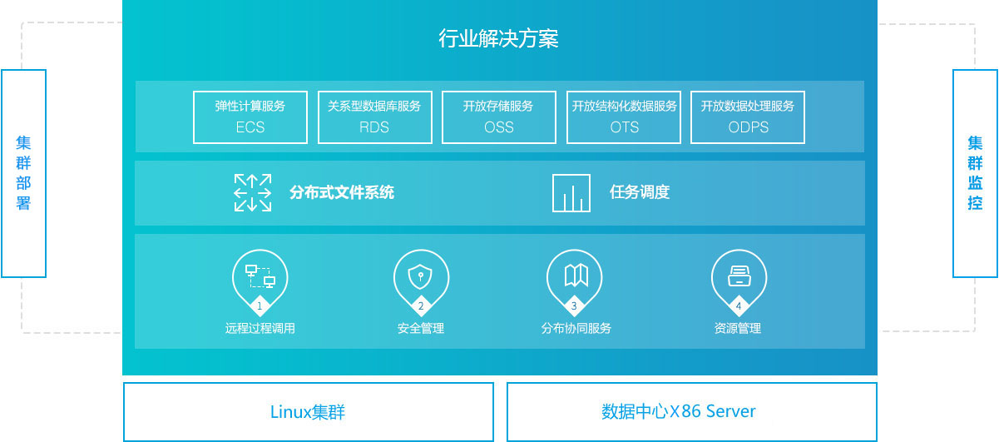

ECS弹性计算服务
数梦工场的弹性计算服务（Elastic Compute Service 简称ECS）是基于数梦云平台的一种简单高效，处理能力可弹性伸缩的计算服务，能够快速构建更稳定、安全的应用。弹性计算服务使得计算基础设施的交付能力 得到极大的提升，在可靠性和安全性方面也得到了较大的保障，从而使管理人员可以更专注于核心业务创新。 ECS是数梦云产品体系中最基础的弹性计算服务，可以实现服务器虚拟化、根据应用需求弹性扩展及回收虚拟机、大规模分布式集群计算能力。ECS建立在飞天 分布式操作系统之上，存储依赖飞天的分布式文件系统，具备分布式存储能力和分布式计算能力；为用户打造大规模云计算平台和大数据计算提供支撑。

产品特点
全面的虚拟化能力ECS
结合底层云计算平台，将硬件资源融合虚拟化，形成弹性资源池，实现资源共享复用。
根据实际业务需求，应用系统可灵活调度池化资源。
完善的生命周期管理
支持完善的虚拟机（ECS 实例）生命周期管理。
支持虚拟机的创建、修改、部署、镜像、迁移、启动、暂停、恢复、休眠、重启、关闭、快照等常用功能，同时支持通过管理界面的控制台远程连接到虚拟机。
所有的操作全部基于图形化配置控制界面。
稳定可靠的系统
三份数据冗余。备份，存储于不同交换机的不同机器中。
自动宕机迁移
云磁盘提供高IOPS，数据高可靠自动多份。
自定义镜像可支持快速复制用户运行环境数据备份和回滚
自定义镜像可以跨灾备数据中心拷贝
提供系统性能报警
服务可用性99.95%，数据可靠性99.999%
丰富的磁盘类型支持能力
可支持SATA磁盘，SSD磁盘、远程云磁盘、远程云SSD磁盘多种磁盘类型，
支持快速挂载和卸载，可方便进行存储、备份、快照。
通过挂载不同的磁盘类型满足在云平台上实现高性能计算业务和一般性业务对云计算的不同要求。
基于镜像的云服务器快速复制
ECS镜像是ECS实例可选择的运行环境模板，包括操作系统和预置的软件和配置。基于ECS镜像技术可以实现云服务器（虚拟机）的快速复制。
系统镜像：ECS默认提供了Windows和Linux多个操作系统版本的镜像，方便用户选择合适的镜像创建云服务器。
自定义镜像：从一个ECS实例的系统盘复制，可以创建自定义镜像。当需要大规模复制同样的云服务器时，自定义镜像是可水平扩展的web层的自动伸缩服务的基础。
基于快照的数据备份
ECS快照是磁盘数据在某一个时间点的拷贝，主要用于备份数据，当应用程序或人为误删除一些数据时，可以通过快照找回；通过数据盘快照，可以复制出与目前磁盘数据一样的新磁盘。
ECS的快照是增量快照，只有两个快照之间的变化的数据块，才会被拷贝备份出来。用户可以通过控制台和API设置自动快照的策略，默认会采取3+1的策略，即自动为用户保留过去3天+上个周日的快照。用户也可以设置创建自动快照的时间段，与自己的应用高峰错开。
弹性伸缩服务实现全局资源动态调度
弹性伸缩服务(Elastic Scaling Service)是根据用户的业务需求和 策略,自动调整其弹性计算资源的管理服务。用户根据自己的业务 需求自动调整其弹性计算资源,在满足业务需求高峰增长时无缝地 增加ECS实例,并在业务需求下降时自动减少ECS实例以节约成本。
全面的安全防护能力
具备防ARP、IP欺骗、ARP攻击的能力
安全组防火墙功能
为云内业务应用提供安全组防火墙功能：通过定义了网络协议、端口、源IP等访问控制规则，为虚机之间提供安全隔离。
另外提供分布式安全防护能力，可以与云盾组件配合实现主机入侵防御、防DDOS攻击、Web防火墙、漏洞检测等功能。
丰富的API接口
ECS 弹性计算服务作为云计算平台的功能模块对外提供开放的API接口，可将运维工作自动化，同时可根据需求灵活调用API接口实现更多定制化需求。
具备：实例相关接口、磁盘相关接口、快照相关接口、镜像相关接口、网络相关接口、安全组相关接口、数据中心相关接口、监控相关接口其他接口。

产品规格
| 属性 | 产品说明 |
|---|---|
| 平台架构 |
基于数梦分布式云平台体系架构 |
| 大规模集群能力 |
单集群支持最大物理主机数720台 单系统支持最大物理主机数无限制 单系统支持最大虚拟机数无限制 |
| 云计算能力 |
支持分布式计算 |
| 虚拟机生命周期管理 |
创建/修改/删除/启动/关闭/暂停/恢复/重启/关闭电源/查询虚拟机 |
| 硬件辅助虚拟化能力 |
支持硬件辅助虚拟化 Intel的VT和AMD-V技术使得虚拟化技术不再需要对GuestOS 内核进行修改，或使用二进制转换等技术对GuestOS 的指令进行处理。 支持AMD的快速虚拟化索引(Rapid Virtualization Indexing)或Intel的扩展页表等处理器技术,优化虚拟机操作系统与物理内存之间 的内存转换时间，从而保证在虚拟机正常运行的同时将开销降至最低。 在一台物理服务器上运行多个封装在虚拟机中的操作系统和应用程序，提高资源利用率。 |
| 虚拟资源调整 |
在线/离线调整vCPU线/离线调整vCPU数目 vCPU与物理CPU核映射，将虚拟机vCPU映射到指定的物理CPU核上。 离线调整CPU调度优先级 离线调整内存大小 在线/离线卸载/挂载云磁盘（修改格式、扩容） 离线调整虚拟交换机和网络策略配置 |
| 虚拟机快照管理 |
创建虚拟机快照 删除虚拟机快照 查询虚拟机快照 从指定的虚拟机快照还原虚拟机 虚拟机定时自动快照 |
| 克隆虚拟机 |
可本机内克隆、主机间克隆，可设置新虚拟机名称，存储池和存储名称，存储格式。本机内克隆时不克隆光盘映像。 在线快速克隆虚拟机 |
| 虚拟机迁移 |
在线跨主机迁移虚拟机 在线迁移虚拟机数据存储 |
| 将虚拟机克隆为模板 |
将指定的虚拟机克隆为虚拟机模板 |
| 将虚拟机转换为模板 |
将指定的虚拟机转换成虚拟机模板 |
| P2V、V2V |
通过P2V和V2V工具实现将物理机或虚拟机迁移到云平台。 |
| 备份策略 |
备份目的地支持：共享文件系统、FTP服务器、SSH/SCP方式。 备份方式支持：全量备份、增量备份、差异备份 按照系统备份策略表中每个备份策略配置的备份时间将对应备份策略指定虚拟机进行备份。 在指定时间段内执行备份策略。 如果备份时刻虚拟机磁盘I/O超过指定阈值，说明不符合客户期望的备份条件，可以跳过当前备份。 |
| 手动备份虚拟机 |
支持手动备份虚拟机 |
| 还原虚拟机 |
从指定虚拟机的历史备份中还原该虚拟机 |
| 高可靠性 |
物理机断电时正在运行的虚拟机自动在其它物理机重启 物理机正常关机时正在运行的虚拟机自动在其它物理机重启 |
| 弹性伸缩服务 |
垂直扩展，可以在几分钟内升级CPU和内存，实时升级带宽 水平扩展，其能够在业务增长时自动增加ECS实例，并在业务下降时自动减少ECS实例 |
| 安全 |
防DDos攻击、防ARP、IP欺骗、ARP攻击，漏洞扫描，WAF功能 安全组规则保护，安全组支持入方向和出方向的安全规则 多用户隔离，每个用户拥有自己的安全组，不同用户名下的安全组之间是完全隔离的 |
| 兼容性 |
兼容性 支持多种操作系统 |
| 虚拟机磁盘管理 |
虚拟机磁盘在线热添加功能 虚拟机磁盘精简卷功能 虚拟机磁盘异步复制，数据容灾功能 |
| 虚拟化性能 |
虚机弹性扩展的阀值的自定义功能 在线虚机硬件配置变更 虚拟机存储支持自动精简扩张、收缩功能 虚拟机支持内存高可用、内存压缩、内存超额使用、内存自动释放功能 |
| 性能优化、负载侦测平衡功能 |
计算资源负载均衡可根据CPU使用情况进行侦测 计算资源负载均衡可根据内存使用情况进行侦测 计算资源负载均衡可根据网络IO使用情况进行侦测 计算资源负载均衡可根据存储IO使用情况进行侦测 可对计算资源负载切换阀值进行设置 当计算资源过剩时，虚拟化平台能够自动正常关闭部分计算节点，当计算资源不足时，虚拟化平台能够自动正常开启计算节点，以满足计算需求。 可对存储资源负载进行侦测并进行负载均衡 提供无宿主OS高性能虚拟层 虚拟化层资源利用率不低于95% |
| 管理 |
支持多地域多数据中心集中管理 |
| 快速复制与部署 |
支持部署脚本实现快速自定义部署虚拟机 支持链接克隆方式快速部署多台虚拟 虚拟化平台支持自动化部署功能，增加物理节点时，可实现自动安装、自动配置、自动加入集群、自动加入计算资源池功能 |